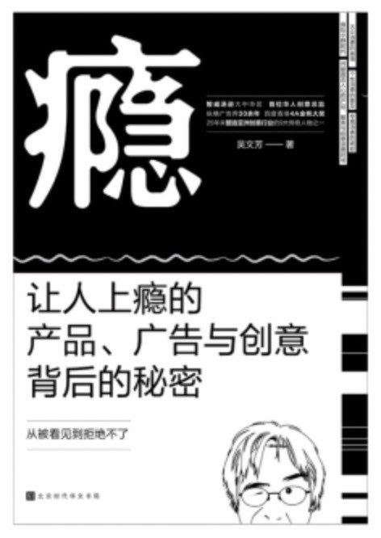

|  |
瘾：让人上瘾的产品、广告与创意背后的秘密
吴文芳
|
序一
序二
序三
序四
前言 思索的酵母
1 吴文芳是什么人？
我是很重要的人
我是知道“知道”的力量的人
我做广告的一些重要年份
我给创意人的一些意见
2 向广告英雄偷师
威廉·伯恩巴克
李奥·贝纳
大卫·奥格威
我心中21条不可忘怀的经典广告
3 我的两个工具箱
工具箱A 工具1：“为什么”指南针
工具2：2.5个“创意制式”
工具3：团团转计划圈
工具4：角色价值心电图
工具5：T 式肯定器
工具6：A4白纸
工具7：ABCDEFG
工具8：“思索列车”时间表
工具9：24/7酵母GPS
工具箱B 战斗力1：人生总是先“书”后赢
战斗力2：接受七只猴子训练
战斗力3：挥洒自如前的一万个小时
战斗力4：从航空公司看 CEO
战斗力5：从保险业看CEO
战斗力6：从购物中心看 CEO
战斗力7：从穿什么看CEO
战斗力8：从耳朵听到的看 CEO
4 给大家几乎免费的午餐
世上几乎免费的午餐
免费午餐派发了
一块钱午餐1： 公路上竖立的图腾酒店
一块钱午餐2：穿在身上的名画
一块钱午餐3： 一间为你准备好思想的酒店
一块钱午餐4：会走动的行李箱
一块钱午餐5： 广州应该很艺术吗？
一块钱午餐6： 未来的航空公司吃什么？
5 未来的广告
苹果与宗教谁更广告？
寻找未来的酵母
策划未来的广告
塑造未来的我
结语 我很幸运